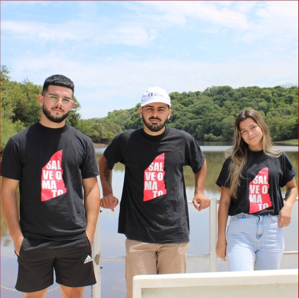

Qual a sua importancia?

A maior floresta de Cachoeirinha
O coletivo Mato do Júlio é composto por pessoas que defendem a área da especulação imobiliária e política. Nosso objetivo é conseguir a preservação total da área, protegendo toda fauna e flora que ali habitam, seu material histórico e cultural.

O Mato do Júlio é composto por uma área de 256 hectares, localizado no município de Cachoeirinha - RS Nele encontramos predomínio do bioma Mata Atlântica e resquícios do bioma Pampa.